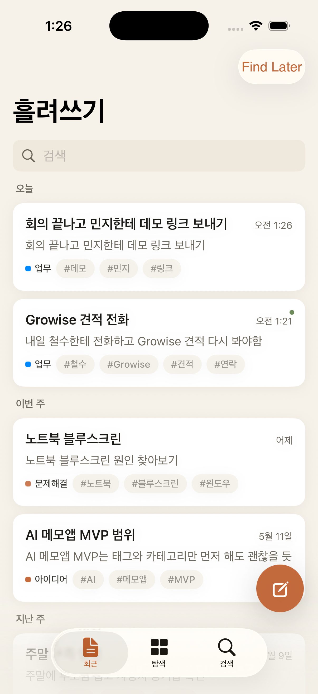
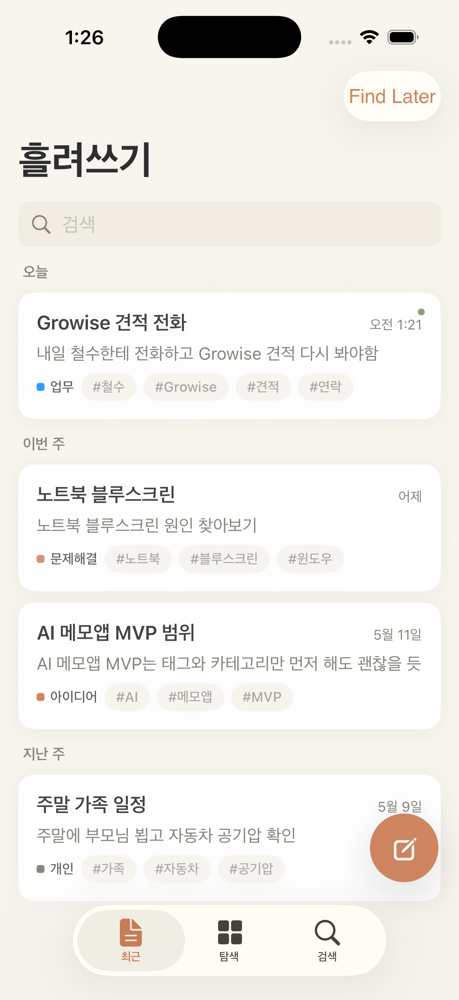
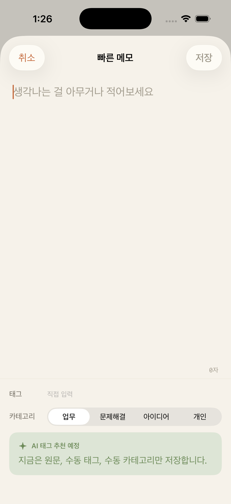
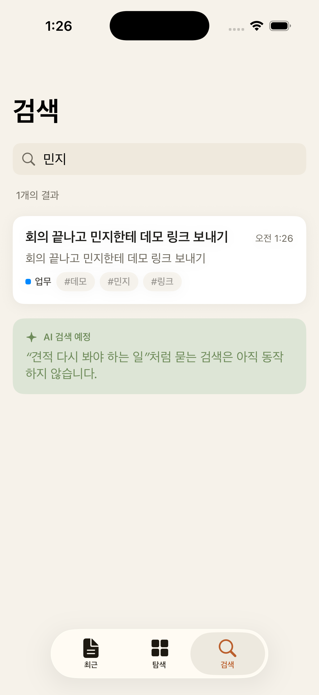

정리하지 않는 사람을 위한 두 번째 기억
흘려쓰기는 메모장을 더 복잡하게 만들지 않는다. 아무렇게나 남긴 원문을, 나중에 찾을 수 있는 개인 기억 시스템으로 바꾼다.

사람은 메모를 쓸 때 정리할 시간이 없다
문제는 기록이 아니라 회수다. 제목을 잘 짓고, 폴더를 만들고, 태그를 붙이는 순간 메모는 일이 된다.
캡처가 느리면 생각이 사라진다
앱을 열고 위치를 고르는 동안, 기록하려던 문장이 흐려진다.
정리는 꾸준히 실패한다
폴더와 Markdown은 파워유저에게 좋지만, 매일의 난잡한 생각에는 마찰이 크다.
검색은 사용자의 기억에 의존한다
정확한 단어를 기억하지 못하면, 분명 쓴 메모도 없는 메모가 된다.
MVP는 AI 없이도 핵심 습관을 검증한다
빠른 작성, 원문 저장, 수동 태그, 수동 카테고리, 검색, 탐색. 이 여섯 가지가 최종앱의 데이터 뼈대다.



최종앱은 메모장이 아니라 개인 맥락 엔진이다
흘려쓰기
문장, 할 일, 이름, 링크, 생각을 구분하지 않고 바로 적는다.
자동 구조화
AI가 태그, 카테고리, 사람, 장소, 날짜 후보를 조용히 붙인다.
연결
비슷한 메모, 반복되는 관심사, 미완료 맥락을 묶는다.
회수
정확한 키워드 대신 “그 견적 얘기”처럼 자연어로 찾는다.
다시 쓰기
흩어진 생각이 다음 결정, 메시지, 체크리스트로 이어진다.
AI의 역할은 사용자를 대신해 정리하는 것이다
최종앱에서 AI는 채팅창이 아니다. 이미 쓴 메모의 뒤에서 조용히 구조를 만들고, 필요할 때만 작은 제안으로 나타난다.
자동 태그와 카테고리
“Growise”, “견적”, “연락”처럼 회수에 필요한 단서를 추천한다.
맥락 요약
여러 메모를 묶어 “이번 주 견적 관련 메모 3개”처럼 보여준다.
자연어 검색
“지난주 노트북 문제 뭐였지?” 같은 질문을 원문과 연결한다.
후속 행동 후보
전화, 확인, 다시 보기처럼 메모 속 작은 작업을 제안한다.
원문은 그대로, 구조는 별도로 쌓는다
Capture layer
원문, 생성 시각, 수동 태그, 수동 카테고리를 가장 먼저 저장한다.
Context layer
AI가 추천 태그, 추천 카테고리, 요약, 관련 메모 링크를 별도 필드로 만든다.
Recall layer
검색, 태그, 카테고리, 자연어 질문, 최근 맥락으로 같은 데이터를 다시 꺼낸다.
더 많은 기능보다 더 낮은 마찰
흘려쓰기는 협업 문서도, 폴더형 지식베이스도, Markdown 편집기도 아니다. 매일 흘러가는 생각을 붙잡고 다시 찾는 iPhone 앱이다.
하지 않는 것
로그인 강제, 팀 협업, 복잡한 폴더, 문서 편집기, 공개 공유, 과한 AI 채팅.
집중하는 것
3초 안에 쓰기, 원문 신뢰, 조용한 자동 정리, 기억나지 않는 메모 찾기.
느낌
warm paper, warm ink, terracotta action, sage AI. 차분하고 사적인 도구.
사용자
생각은 많은데 정리는 싫고, 나중에 찾지 못해 같은 일을 반복하는 사람.
최종앱은 한 번에 커지지 않는다
1. 신뢰 가능한 저장
SwiftData 또는 파일 기반 저장, 편집/삭제, 백업, 마이그레이션.
2. 찾기 경험 강화
검색 하이라이트, 필터 조합, 최근 검색, 관련 태그 추천.
3. AI enrichment
비동기 분석 큐, 추천 필드, 사용자가 승인하는 자동 정리.
4. 개인 기억 레이어
자연어 검색, 관련 메모 묶음, 리마인드 후보, 온디바이스 우선 privacy.
성공 기준은 작성량이 아니라 다시 찾은 순간이다
앱 실행 후 첫 글자까지
캡처 마찰이 낮아졌는지 보는 가장 중요한 입력 지표.
검색 또는 탐색 재방문
사용자가 “나중에 찾기” 가치를 실제로 쓰는지 확인한다.
AI 추천 수락률
AI가 귀찮은 정리를 줄이고 있는지 판단하는 품질 지표.
숫자는 제품 목표치다. MVP에서는 baseline을 먼저 만든다.
아무렇게나 써도 나중에 찾을 수 있게
흘려쓰기의 최종 형태는 “잘 정리된 메모앱”이 아니다. 정리하지 않아도, 나중의 내가 다시 이해할 수 있는 기억의 표면이다.